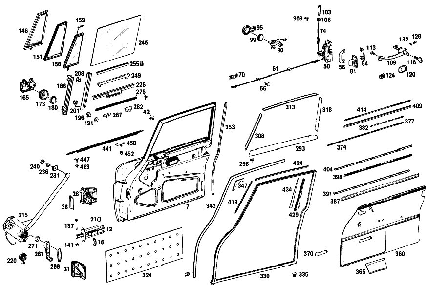

| № | Артикул | Название | Кол. | Примечание | Ограничение |
|---|---|---|---|---|---|
| 470 | A 111 720 58 05 | ОСТОВ ДВЕРИ | - | ||
| 476 | A 111 720 52 37 | ШАРНИР | - | ||
| 476 | A 111 720 51 37 | ШАРНИР | 1 | СВЕРХУ СПРАВА [067] VOR EINBAU SCHARNIERBOLZEN VON ANDERER SEITE EINPRESSEN; SCHARNIERBOLZENKOPF MUSS NACH OBEN ZEIGEN. | |
| 483 | A 111 720 52 38 | ШАРНИР | - | ||
| 483 | A 111 720 51 38 | ШАРНИР | 1 | СНИЗУ СПРАВА [067] VOR EINBAU SCHARNIERBOLZEN VON ANDERER SEITE EINPRESSEN; SCHARNIERBOLZENKOPF MUSS NACH OBEN ZEIGEN. | |
| 488 | A 110 721 01 80 | УПЛОТНИТЕЛЬ | 2 | HINGE TO DOOR TOP 70 MM | |
| 495 | A 110 730 12 35 | ЗАМОК ДВЕРИ | 1 | RIGHT,LESS INTERIOR LOCKING MECHANISM Рулевое управление: Влево | |
| 500 | A 111 723 52 24 | Окаймление | 1 | для DOOR LOCK RIGHT | |
| 505 | A 111 720 50 92 | ТЯГА | 2 | ДВЕРЬ ВОДИТЕЛЯ | |
| 509 | A 111 720 50 93 | ПРЕДОХР. БЛОКИР. ДВЕРИ | 2 | ДВЕРЬ ВОДИТЕЛЯ | |
| 514 | A 121 987 02 37 | - ФИТИНГ | 4 | [402] БОЛЬШЕ НЕ ПОСТАВЛЯЕТСЯ | |
| 519 | A 111 992 00 25 | - ВТУЛКА | 4 | ||
| 524 | H 10 180 723 00 55 | - ПРЕДОХРАНИТЕЛЬ | - | ||
| 530 | A 180 720 04 93 | ПРЕДОХР. БЛОКИР. ДВЕРИ | 1 | СПРАВА | |
| 535 | A 180 723 01 61 | РОЗЕТКА | 2 | ВНУТР. БЛОКИРОВКА | |
| 539 | A 180 723 05 24 | Крышка | 4 | ВНУТР. БЛОКИРОВКА | |
| 546 | A 110 720 12 04 | ПЕТЛЯ | 1 | СПРАВА | |
| 551 | A 110 723 02 11 | ПЛАСТИНА | - | ||
| 551 | A 100 723 02 11 | Компенсационная пластина | NB | 2.0 MM [409] ПРИ МОНТАЖЕ ПОДОГНАТЬ ПО МЕСТУ | |
| 556 | A 110 760 10 61 | РУЧКА ВНУТРЕННЯЯ | 1 | СПРАВА | |
| 562 | A 110 766 06 11 | РОЗЕТКА | 1 | INTERIOR HANDLE ASSEMBLY TO DOOR RIGHT | |
| 566 | A 110 766 06 90 | ВСТАВКА | 2 | ВНУТР. ПРИВОД НА ДВЕРИ | |
| 571 | A 110 766 07 01 | РУЧКА ДВЕРИ | 1 | OUTSIDE LEFT,KEY LOCKING | |
| 576 | A 120 766 00 15 | - БОЛТ | 2 | [402] БОЛЬШЕ НЕ ПОСТАВЛЯЕТСЯ | |
| 582 | A 000 766 11 06 | - Ключ | 2 | с LETTER [063] WHEN ORDERING,STATE LETTER AND NO.OF LOCK | |
| 587 | A 111 766 53 05 | ПОДКЛАДКА | 1 | DOOR HANDLES LEFT FRONT [049] FROM CHASSIS 033128 ALSO INSTALLED ON SEE FOOTN.66 [066] 032999, 030001, 030017, 030054, 030056- 030058, 030060, 030062, 032072, 030073, 030075, 030096- 030099, 030111, 030113- 030115. | |
| 592 | A 111 766 51 05 | ПОДКЛАДКА | 1 | DOOR HANDLES LEFT REAR [049] FROM CHASSIS 033128 ALSO INSTALLED ON SEE FOOTN.66 [066] 032999, 030001, 030017, 030054, 030056- 030058, 030060, 030062, 032072, 030073, 030075, 030096- 030099, 030111, 030113- 030115. | |
| 596 | A 111 720 50 43 | ПЛАСТИНА | 2 | КРОНШТЕЙН ДВЕРИ | |
| 601 | A 111 720 51 16 | КРОНШТЕЙН ДВЕРИ | 2 | ||
| 606 | A 000 987 91 40 | - РЕЗИНОВЫЙ УПОР | 2 | ||
| 612 | A 186 723 00 19 | - ПЛАСТИНА | 2 | [417] БОЛЬШЕ НЕ ПОСТАВЛЯЕТСЯ, ЗАКАЗЫВАТЬ КОМПЛЕКТ ПОСТАВКИ | |
| 619 | A 111 720 66 55 | СТЕКЛО ПОВОРОТНОЕ | 1 | СПРАВА [052] 021 FROM CHASSIS 030089;023 FROM CHASSIS 030103 ALSO INSTALLED ON 029037-029045,029070 EXCEPT FOR 030138,030130 | |
| 624 | A 111 725 54 24 | - УПЛОТНИТЕЛЬ | 1 | СТЕКЛО ПОВОРОТНОЕ [055] 021 FROM CHASSIS 013263 | |
| 629 | A 111 720 58 55 | - СТЕКЛО ПОВОРОТНОЕ | 1 | СПРАВА [006] FROM CHASSIS 047898 BOTTOM OBLONG HOLE MODIFIED FROM 8 MM TO 6.3 MM [043] FROM CHASSIS 011206 ALSO INSTALLED ON 010880,010882 | |
| 634 | A 111 725 53 53 | - ПОДШИПНИК | 2 | ВНИЗУ [043] FROM CHASSIS 011206 ALSO INSTALLED ON 010880,010882 | |
| 639 | A 111 720 50 29 | - КОРЕННАЯ ШЕЙКА | 2 | СВЕРХУ | |
| 644 | A 111 725 58 87 | - СОЕДИНЕНИЕ | 1 | СПРАВА [047] 021 FROM CHASSIS 020004 ALSO INSTALLED ON SEE FOOTN.65 [065] 016538, 016558, 016587, 016590, 016693, 016700, 016711, 016737- 016741, 016794, 016844- 016849, 016868- 016870, 016886, 016888- 016890, 016940- 016943, 016954- 016958, 016918, 016936, 016938, 016990- 016993, 016995, 016996, 019905. | |
| 650 | A 000 985 18 30 | - ПРОФИЛЬ ГЕРМЕТИЗИРУЮЩИЙ | 2 | 885 MM [404] ЗАКАЗЫВАТЬ ПОГОННЫМИ МЕТРАМИ | |
| 657 | A 110 720 02 66 | ЗАМКОВЫЙ БЛОК | 1 | СПРАВА [006] FROM CHASSIS 047898 BOTTOM OBLONG HOLE MODIFIED FROM 8 MM TO 6.3 MM | |
| 665 | A 000 833 12 13 | КНОПКА | 2 | FASTENER TO SWIVEL WINDOW | |
| 670 | A 110 760 03 67 | КОЛПАЧОК | 2 | ||
| 676 | A 111 725 58 30 | НАПРАВЛЯЮЩАЯ СТЕКЛА | 1 | СПРАВА СЗАДИ [059] FROM CHASSIS 032495 EXCEPT FOR 032719-032726,032734-032743 | |
| 679 | A 111 725 50 32 | КОЛОДКА НАПРАВЛЯЮЩАЯ | 4 | ШИНА СКОЛЬЖЕНИЯ СТЕКЛА [059] FROM CHASSIS 032495 EXCEPT FOR 032719-032726,032734-032743 | |
| 684 | A 111 720 56 45 | FE.ПОДЪЕМНАЯ ПЛАНКА | - | ||
| 688 | A 111 725 54 02 | СТЕКЛОПОДЪЕМНИК | 1 | СПРАВА | |
| 691 | A 120 984 01 37 | ПОЛЗУН | - | ||
| 691 | A 115 586 00 72 | РЕМКОМПЛЕКТ | - | ||
| 691 | A 123 720 01 14 | Ремк-т стеклоподъемника | 4 | [037] NO LONGER AVAILABLE INDIVIDUALLY,INSTEAD:115 586 00 72 | |
| 696 | A 000 984 24 56 | Диск | 4 | [037] NO LONGER AVAILABLE INDIVIDUALLY,INSTEAD:115 586 00 72 | |
| 701 | A 000 990 05 48 | Диск | 4 | [415] ПРИМЕЧ. ПО ЗАМЕНЕ ПРИМЕНИМО ТОЛЬКО ДЛЯ СТОЯЩИХ РЯДОМ ПОЗИЦИЙ [037] NO LONGER AVAILABLE INDIVIDUALLY,INSTEAD:115 586 00 72 | |
| 706 | A 111 725 52 10 | ЗАЩИТНОЕ СТЕКЛО | 1 | СПРАВА | |
| 711 | A 111 725 52 32 | КОЛОДКА НАПРАВЛЯЮЩАЯ | 1 | СПРАВА [057] FROM CHASSIS 047898 | |
| 716 | A 000 987 08 42 | ПРОСТАВКА | 8 | ||
| 721 | A 111 720 56 30 | РАМА | 1 | СВЕРХУ СПРАВА [052] 021 FROM CHASSIS 030089;023 FROM CHASSIS 030103 ALSO INSTALLED ON 029037-029045,029070 EXCEPT FOR 030138,030130 | |
| 726 | A 111 720 50 47 | ПЛАНКА КРЕПЕЖНАЯ | 2 | СТЕКЛО БОКОВОЕ | |
| 730 | A 110 760 04 02 | КРИВОШИП | 2 | ||
| 734 | A 110 768 01 95 | ОБИВКА | 2 | ПОДВИЖН. СТЕКЛО | |
| 737 | A 111 725 50 45 | ПЛАНКА КРЕПЛЕНИЯ | 2 | ||
| 742 | A 000 985 03 30 | ПРОФИЛЬ ГЕРМЕТИЗИРУЮЩИЙ | 2 | ВНУТР. 530 MM [404] ЗАКАЗЫВАТЬ ПОГОННЫМИ МЕТРАМИ | |
| 742 | A 000 985 03 30 | ПРОФИЛЬ ГЕРМЕТИЗИРУЮЩИЙ | 2 | СНАРУЖИ 510 MM [404] ЗАКАЗЫВАТЬ ПОГОННЫМИ МЕТРАМИ | |
| 747 | A 111 987 06 40 | РЕЗИНОВЫЙ УПОР | 2 | [060] UP TO CHASSIS 040164 | |
| 750 | A 111 725 52 65 | УПЛОТНИТ. ПЛАНКА | 1 | DOOR FRONT PILLAR,RIGHT | |
| 755 | A 111 725 54 65 | УПЛОТНИТ. ПЛАНКА | 1 | ДВЕРЬ ВОДИТЕЛЯ СПРАВА | |
| 760 | A 111 725 60 66 | УПЛОТНИТЕЛЬ | 1 | ROOF RAIL,RIGHT | |
| 782 | A 111 720 58 51 | Обшивка | - | ||
| 782 | A 111 720 60 51 | Обшивка | 1 | с LINING,RIGHT [013] WHEN ORDERING,STATE COLOR AND CHASSIS NO. | |
| 787 | A 111 727 52 22 | ДЕКОР. НАКЛАДКА | 1 | ||
| 793 | A 111 727 52 90 | ШУМОИЗОЛЯЦИЯ | - | ||
| 793 | A 123 727 00 90 | ШУМОИЗОЛЯЦИЯ | - | ||
| 793 | A 110 727 03 90 | Шумоизол. двери водителя | - | ||
| 793 | A 210 682 00 08 | Шумоизоляция двери | - | [409] ПРИ МОНТАЖЕ ПОДОГНАТЬ ПО МЕСТУ | |
| 793 | A 168 682 03 08 | Демпфирование | 2 | ||
| 800 | A 111 720 64 78 | УПЛОТНИТЕЛЬНАЯ РАМА | 1 | ДВЕРЬ ВОДИТЕЛЯ СПРАВА [047] 021 FROM CHASSIS 020004 ALSO INSTALLED ON SEE FOOTN.65 [065] 016538, 016558, 016587, 016590, 016693, 016700, 016711, 016737- 016741, 016794, 016844- 016849, 016868- 016870, 016886, 016888- 016890, 016940- 016943, 016954- 016958, 016918, 016936, 016938, 016990- 016993, 016995, 016996, 019905. | |
| 807 | A 111 720 53 85 | ОКАНТОВКА | 2 | СТОЙКА ПЕРЕДНЕЙ СТЕНКИ [013] WHEN ORDERING,STATE COLOR AND CHASSIS NO. | |
| 814 | A 111 720 52 85 | ОКАНТОВКА | 2 | [013] WHEN ORDERING,STATE COLOR AND CHASSIS NO. | |
| 819 | A 111 727 52 72 | ПЛАНКА | 1 | СПРАВА | |
| 825 | A 111 720 56 70 | Обшивка | 1 | ARMREST TO COVERING,RITHT [402] БОЛЬШЕ НЕ ПОСТАВЛЯЕТСЯ [013] WHEN ORDERING,STATE COLOR AND CHASSIS NO. | |
| 831 | A 111 727 52 82 | - МОЛДИНГ | 1 | КАРМАН СПРАВА | |
| 838 | A 111 970 56 01 | - ПОДЛОКОТНИК | 1 | СПРАВА | |
| 845 | A 111 971 52 30 | - МОЛДИНГ | 1 | СПРАВА | |
| 855 | A 111 728 52 30 | МОЛДИНГ | 1 | ДВЕРЬ ВОДИТЕЛЯ СПРАВА | |
| 862 | A 000 988 17 81 | КНОПКА НАЖИМНАЯ | 8 | ||
| 866 | A 000 988 15 81 | Крепежная втулка | - | ||
| 866 | A 001 988 20 81 | КНОПКА НАЖИМНАЯ | - | ||
| 866 | A 008 997 03 81 | КАБ. ВТУЛКА | - | ||
| 866 | A 001 988 20 81 | КНОПКА НАЖИМНАЯ | - | ||
| 866 | A 001 988 76 81 | Кнопка-застежка | 8 | ||
| 872 | A 111 728 60 21 | НАКЛАДКА | 1 | СВЕРХУ СПРАВА | |
| 879 | A 111 728 62 21 | НАКЛАДКА | 1 | СНИЗУ СПРАВА | |
| 886 | A 111 728 52 24 | НАКЛАДКА ЗАЩИТНАЯ | 1 | СПРАВА | |
| 893 | A 111 728 54 24 | НАКЛАДКА ЗАЩИТНАЯ | 1 | СНИЗУ СПРАВА | |
| 900 | A 111 728 56 21 | НАКЛАДКА | 1 | СПРАВА | |
| A 110 728 02 30 | МОЛДИНГ | - | [025] UP TO CHASSIS 028978 | ||
| A 111 720 51 05 | ОСТОВ ДВЕРИ | - | [042] UP TO CHASSIS 011205 EXCEPT FOR 010880,010882 | ||
| A 111 720 52 05 | ОСТОВ ДВЕРИ | - | [042] UP TO CHASSIS 011205 EXCEPT FOR 010880,010882 | ||
| A 111 720 53 05 | ОСТОВ ДВЕРИ | - | [044] FROM CHASSIS 011206-020003 ALSO INSTALLED ON 010880,010882,EXCEPT FOR SEE FOOTN.65 [065] 016538, 016558, 016587, 016590, 016693, 016700, 016711, 016737- 016741, 016794, 016844- 016849, 016868- 016870, 016886, 016888- 016890, 016940- 016943, 016954- 016958, 016918, 016936, 016938, 016990- 016993, 016995, 016996, 019905. | ||
| A 111 720 54 05 | ОСТОВ ДВЕРИ | - | [044] FROM CHASSIS 011206-020003 ALSO INSTALLED ON 010880,010882,EXCEPT FOR SEE FOOTN.65 [065] 016538, 016558, 016587, 016590, 016693, 016700, 016711, 016737- 016741, 016794, 016844- 016849, 016868- 016870, 016886, 016888- 016890, 016940- 016943, 016954- 016958, 016918, 016936, 016938, 016990- 016993, 016995, 016996, 019905. | ||
| A 111 720 56 05 | ОСТОВ ДВЕРИ | - | [045] FROM CHASSIS 020004-033127 ALSO INSTALLED ON SEE FOOTN.65 EXCEPT FOR SEE FOOTN.66 [065] 016538, 016558, 016587, 016590, 016693, 016700, 016711, 016737- 016741, 016794, 016844- 016849, 016868- 016870, 016886, 016888- 016890, 016940- 016943, 016954- 016958, 016918, 016936, 016938, 016990- 016993, 016995, 016996, 019905. [066] 032999, 030001, 030017, 030054, 030056- 030058, 030060, 030062, 032072, 030073, 030075, 030096- 030099, 030111, 030113- 030115. | ||
| A 111 720 57 05 | ОСТОВ ДВЕРИ | - | |||
| A 111 720 59 05 | ОСТОВ ДВЕРИ | - | |||
| A 111 720 61 05 | ОСТОВ ДВЕРИ | 1 | СЛЕВА [049] FROM CHASSIS 033128 ALSO INSTALLED ON SEE FOOTN.66 [066] 032999, 030001, 030017, 030054, 030056- 030058, 030060, 030062, 032072, 030073, 030075, 030096- 030099, 030111, 030113- 030115. | ||
| A 111 720 60 05 | ОСТОВ ДВЕРИ | - | |||
| A 111 720 62 05 | ОСТОВ ДВЕРИ | 1 | СПРАВА [049] FROM CHASSIS 033128 ALSO INSTALLED ON SEE FOOTN.66 [066] 032999, 030001, 030017, 030054, 030056- 030058, 030060, 030062, 032072, 030073, 030075, 030096- 030099, 030111, 030113- 030115. | ||
| N 900421 006000 | - Резьбовая вставка | - | |||
| A 111 720 51 37 | ШАРНИР | 1 | СВЕРХУ СЛЕВА | ||
| A 111 720 51 38 | ШАРНИР | 1 | ВНИЗУ СЛЕВА | ||
| A 000 997 04 88 | - Пресс-масленка | 4 | |||
| N 007987 008119 | БОЛТ | 16 | ПЕТЛЯ НА ДВЕРИ | ||
| A 110 728 01 80 | УПЛОТНИТЕЛЬ | - | |||
| N 000933 008147 | Винт | - | |||
| N 304017 008021 | Винт с 6-гранной головкой | 14 | ДВЕРЬ ВОДИТ. НА СТОЙКЕ ПЕРЕДН.СТЕНКИ; M8X20 | ||
| A 136 990 39 40 | ШАЙБА | - | |||
| A 180 990 06 40 | ШАЙБА | 14 | ДВЕРЬ ВОДИТ. НА СТОЙКЕ ПЕРЕДН.СТЕНКИ | ||
| N 000127 008203 | Пружинное кольцо | 14 | ДВЕРЬ ВОДИТ. НА СТОЙКЕ ПЕРЕДН.СТЕНКИ | ||
| A 110 720 11 35 | ЗАМОК | - | |||
| A 110 720 15 35 | ЗАМОК | 1 | LEFT,с INTERIOR LOCKING MECHANISM Рулевое управление: Влево | ||
| A 110 720 12 35 | ЗАМОК | - | |||
| A 110 720 16 35 | ЗАМОК | 1 | LESS INTERIOR LOCKING MECHANISM, RIGHT Рулевое управление: Вправо | ||
| A 110 730 08 35 | ЗАМОК ДВЕРИ | - | |||
| A 110 730 07 35 | ЗАМОК ДВЕРИ | - | |||
| A 110 730 11 35 | ЗАМОК ДВЕРИ | 1 | LEFT,LESS INTERIOR LOCKING MECHANISM Рулевое управление: Вправо | ||
| A 000 990 33 30 | Болт с потайной головкой | 8 | ЗАМОК ДВЕРИ НА ВНУТР. ПАНЕЛИ | ||
| A 111 723 51 24 | Окаймление | 1 | для DOOR LOCK LEFT | ||
| N 007988 004138 | БОЛТ | 4 | EDGING TO DOOR | ||
| A 100 994 01 60 | - предохранитель | 8 | |||
| H 30 180 720 03 93 | ПРЕДОХР. БЛОКИР. ДВЕРИ | - | [413] НОМЕР ДЕТАЛИ ЗАПИСАН В НОВОЙ ФОРМЕ ЗАПИСИ | ||
| A 180 720 03 93 | ПРЕДОХР. БЛОКИР. ДВЕРИ | 1 | СЛЕВА | ||
| H 30 180 720 04 93 | ПРЕДОХР. БЛОКИР. ДВЕРИ | - | [413] НОМЕР ДЕТАЛИ ЗАПИСАН В НОВОЙ ФОРМЕ ЗАПИСИ | ||
| H 30 180 723 01 61 | РОЗЕТКА | - | [413] НОМЕР ДЕТАЛИ ЗАПИСАН В НОВОЙ ФОРМЕ ЗАПИСИ | ||
| H 30 180 723 02 24 | ОБРАМЛЕНИЕ | - | [413] НОМЕР ДЕТАЛИ ЗАПИСАН В НОВОЙ ФОРМЕ ЗАПИСИ | ||
| N 007987 003108 | БОЛТ | 4 | ВНУТР. БЛОКИРОВКА | ||
| N 007981 003246 | Шуруп | 4 | ВНУТР. БЛОКИРОВКА | ||
| N 000127 004203 | Пружинное кольцо | - | |||
| N 912004 004102 | Пружинное кольцо | 4 | ВНУТР. БЛОКИРОВКА | ||
| N 000125 004311 | Шайба | - | |||
| N 000125 004319 | Шайба | 4 | ВНУТР. БЛОКИРОВКА | ||
| A 110 720 03 04 | ПЕТЛЯ | - | |||
| A 110 720 05 04 | ПЕТЛЯ | - | |||
| A 110 720 11 04 | ПЕТЛЯ | 1 | СЛЕВА | ||
| H 10 120 723 02 05 | ПОДКЛАДКА | - | |||
| H 10 120 723 03 05 | ПОДКЛАДКА | - | |||
| A 110 723 03 11 | ПЛАСТИНА | NB | 2.6 MM | ||
| N 007987 006130 | БОЛТ | 6 | |||
| A 110 760 09 61 | РУЧКА ВНУТРЕННЯЯ | 1 | СЛЕВА | ||
| N 007985 006132 | Винт | 4 | ВНУТР. ПРИВОД НА ДВЕРИ [402] БОЛЬШЕ НЕ ПОСТАВЛЯЕТСЯ | ||
| A 000 984 17 55 | ШАЙБА | 4 | ВНУТР. ПРИВОД НА ДВЕРИ [402] БОЛЬШЕ НЕ ПОСТАВЛЯЕТСЯ | ||
| N 006797 006140 | Зубчатая шайба | 4 | ВНУТР. ПРИВОД НА ДВЕРИ | ||
| A 110 766 05 11 | РОЗЕТКА | 1 | INTERIOR HANDLE ASSEMBLY TO DOOR LEFT | ||
| N 007987 004119 | БОЛТ | 2 | |||
| A 110 766 05 90 | ВСТАВКА | - | |||
| A 110 766 01 01 | РУЧКА ДВЕРИ | - | |||
| A 110 766 03 01 | РУЧКА ДВЕРИ | - | |||
| A 110 766 02 01 | РУЧКА ДВЕРИ | - | |||
| A 110 766 04 01 | РУЧКА ДВЕРИ | - | |||
| A 110 766 08 01 | РУЧКА ДВЕРИ | 1 | OUTSIDE RIGHT,KEY LOCKING | ||
| A 000 766 19 06 | Ключ | 1 | ЗАГОТОВКА [402] БОЛЬШЕ НЕ ПОСТАВЛЯЕТСЯ [064] WHEN ORDERING,STATE LETTER OF KEY BITTING | ||
| A 110 766 01 05 | ПОДКЛАДКА | - | |||
| A 120 766 00 05 | ПОДКЛАДКА | 2 | DOOR HANDLES FRONT [048] UP TO CHASSIS 033127 EXCEPT FOR SEE FOOTN.66 [066] 032999, 030001, 030017, 030054, 030056- 030058, 030060, 030062, 032072, 030073, 030075, 030096- 030099, 030111, 030113- 030115. | ||
| A 110 766 00 05 | ПОДКЛАДКА | 2 | DOOR HANDLES REAR [048] UP TO CHASSIS 033127 EXCEPT FOR SEE FOOTN.66 [066] 032999, 030001, 030017, 030054, 030056- 030058, 030060, 030062, 032072, 030073, 030075, 030096- 030099, 030111, 030113- 030115. | ||
| A 111 766 54 05 | ПОДКЛАДКА | 1 | DOOR HANDLES RIGHT FRONT [049] FROM CHASSIS 033128 ALSO INSTALLED ON SEE FOOTN.66 [066] 032999, 030001, 030017, 030054, 030056- 030058, 030060, 030062, 032072, 030073, 030075, 030096- 030099, 030111, 030113- 030115. | ||
| A 111 766 52 05 | ПОДКЛАДКА | 1 | DOOR HANDLES RIGHT REAR [049] FROM CHASSIS 033128 ALSO INSTALLED ON SEE FOOTN.66 [066] 032999, 030001, 030017, 030054, 030056- 030058, 030060, 030062, 032072, 030073, 030075, 030096- 030099, 030111, 030113- 030115. | ||
| N 007985 006157 | Винт | - | M6X12 | ||
| N 000000 001145 | Винт с 6-гр. глвк | 2 | ДВЕРН. РУЧКИ; M6X12 | ||
| N 000137 006204 | Пружинная шайба | 2 | ДВЕРН. РУЧКИ | ||
| N 007988 006141 | БОЛТ | 4 | |||
| A 111 720 50 16 | КРОНШТЕЙН ДВЕРИ | - | |||
| A 001 987 01 40 | - РЕЗИНОВЫЙ УПОР | - | |||
| H 10 186 723 00 19 | - ПЛАСТИНА | - | [413] НОМЕР ДЕТАЛИ ЗАПИСАН В НОВОЙ ФОРМЕ ЗАПИСИ | ||
| N 000094 004011 | - ШПЛИНТ | 2 | |||
| N 000933 006103 | Винт | - | |||
| N 304017 006018 | Винт с 6-гранной головкой | 4 | КРОНШТЕЙН ДВЕРИ; M6X12 | ||
| A 094 990 68 10 | Пружинное кольцо | 4 | КРОНШТЕЙН ДВЕРИ | ||
| A 111 720 55 55 | СТЕКЛО ПОВОРОТНОЕ | 1 | СЛЕВА [042] UP TO CHASSIS 011205 EXCEPT FOR 010880,010882 | ||
| A 111 720 56 55 | СТЕКЛО ПОВОРОТНОЕ | 1 | СПРАВА [042] UP TO CHASSIS 011205 EXCEPT FOR 010880,010882 | ||
| A 111 720 59 55 | СТЕКЛО ПОВОРОТНОЕ | - | [044] FROM CHASSIS 011206-020003 ALSO INSTALLED ON 010880,010882,EXCEPT FOR SEE FOOTN.65 [065] 016538, 016558, 016587, 016590, 016693, 016700, 016711, 016737- 016741, 016794, 016844- 016849, 016868- 016870, 016886, 016888- 016890, 016940- 016943, 016954- 016958, 016918, 016936, 016938, 016990- 016993, 016995, 016996, 019905. | ||
| A 111 720 60 55 | СТЕКЛО ПОВОРОТНОЕ | - | [044] FROM CHASSIS 011206-020003 ALSO INSTALLED ON 010880,010882,EXCEPT FOR SEE FOOTN.65 [065] 016538, 016558, 016587, 016590, 016693, 016700, 016711, 016737- 016741, 016794, 016844- 016849, 016868- 016870, 016886, 016888- 016890, 016940- 016943, 016954- 016958, 016918, 016936, 016938, 016990- 016993, 016995, 016996, 019905. | ||
| A 111 720 61 55 | СТЕКЛО ПОВОРОТНОЕ | 1 | [050] 021 FROM CHASSIS 020004-030088 ALSO INSTALLED ON SEE FOOTN.65;023 UP TO CHASSIS 030102 ALSO INSTALLED ON 030128,030130 EXCEPT FOR 029037-029045,029070 [065] 016538, 016558, 016587, 016590, 016693, 016700, 016711, 016737- 016741, 016794, 016844- 016849, 016868- 016870, 016886, 016888- 016890, 016940- 016943, 016954- 016958, 016918, 016936, 016938, 016990- 016993, 016995, 016996, 019905. [023] FROM CHASSIS 017908 | ||
| A 111 720 63 55 | СТЕКЛО ПОВОРОТНОЕ | - | [006] FROM CHASSIS 047898 BOTTOM OBLONG HOLE MODIFIED FROM 8 MM TO 6.3 MM | ||
| A 111 720 65 55 | СТЕКЛО ПОВОРОТНОЕ | 1 | СЛЕВА [052] 021 FROM CHASSIS 030089;023 FROM CHASSIS 030103 ALSO INSTALLED ON 029037-029045,029070 EXCEPT FOR 030138,030130 | ||
| A 111 720 62 55 | СТЕКЛО ПОВОРОТНОЕ | 1 | [050] 021 FROM CHASSIS 020004-030088 ALSO INSTALLED ON SEE FOOTN.65;023 UP TO CHASSIS 030102 ALSO INSTALLED ON 030128,030130 EXCEPT FOR 029037-029045,029070 [065] 016538, 016558, 016587, 016590, 016693, 016700, 016711, 016737- 016741, 016794, 016844- 016849, 016868- 016870, 016886, 016888- 016890, 016940- 016943, 016954- 016958, 016918, 016936, 016938, 016990- 016993, 016995, 016996, 019905. [023] FROM CHASSIS 017908 | ||
| A 111 720 64 55 | СТЕКЛО ПОВОРОТНОЕ | - | [006] FROM CHASSIS 047898 BOTTOM OBLONG HOLE MODIFIED FROM 8 MM TO 6.3 MM | ||
| A 111 725 52 24 | - УПЛОТНИТЕЛЬ | 1 | СТЕКЛО ПОВОРОТНОЕ [054] UP TO CHASSIS 013262 | ||
| A 111 725 53 24 | - УПЛОТНИТЕЛЬ | 1 | СТЕКЛО ПОВОРОТНОЕ [055] 021 FROM CHASSIS 013263 | ||
| A 111 720 53 55 | - СТЕКЛО ПОВОРОТНОЕ | 1 | СЛЕВА [402] БОЛЬШЕ НЕ ПОСТАВЛЯЕТСЯ [042] UP TO CHASSIS 011205 EXCEPT FOR 010880,010882 | ||
| A 111 720 54 55 | - СТЕКЛО ПОВОРОТНОЕ | 1 | СПРАВА [042] UP TO CHASSIS 011205 EXCEPT FOR 010880,010882 | ||
| A 111 720 57 55 | - СТЕКЛО ПОВОРОТНОЕ | 1 | СЛЕВА [006] FROM CHASSIS 047898 BOTTOM OBLONG HOLE MODIFIED FROM 8 MM TO 6.3 MM [043] FROM CHASSIS 011206 ALSO INSTALLED ON 010880,010882 | ||
| A 111 725 51 53 | - ПОДШИПНИК | 2 | ВНИЗУ [042] UP TO CHASSIS 011205 EXCEPT FOR 010880,010882 | ||
| N 007513 005110 | - САМОРЕЗ | 4 | ПЕТЛЯ ДВЕРИ СВЕРХУ СПРАВА | ||
| N 000137 005203 | - Пружинная шайба | 4 | ПЕТЛЯ ДВЕРИ СВЕРХУ СПРАВА | ||
| A 136 990 13 40 | - ШАЙБА | NB | ПЕТЛЯ ДВЕРИ СВЕРХУ СПРАВА [402] БОЛЬШЕ НЕ ПОСТАВЛЯЕТСЯ | ||
| A 094 990 61 07 | - Стопорная шайба | 2 | ПЕТЛЯ ДВЕРИ СВЕРХУ СПРАВА | ||
| N 001472 004002 | - ПРОСЕЧНОЙ ШТИФТ | 2 | |||
| N 000091 005106 | - БОЛТ | 2 | ПЕТЛЯ ДВЕРИ СВЕРХУ СПРАВА [402] БОЛЬШЕ НЕ ПОСТАВЛЯЕТСЯ | ||
| A 111 725 55 87 | - СОЕДИНЕНИЕ | 2 | СЗАДИ [046] UP TO CHASSIS 020003 EXCEPT FOR SEE FOOTN.65 [065] 016538, 016558, 016587, 016590, 016693, 016700, 016711, 016737- 016741, 016794, 016844- 016849, 016868- 016870, 016886, 016888- 016890, 016940- 016943, 016954- 016958, 016918, 016936, 016938, 016990- 016993, 016995, 016996, 019905. | ||
| A 111 725 53 87 | - СОЕДИНЕНИЕ | 1 | СПЕРЕДИ СЛЕВА [046] UP TO CHASSIS 020003 EXCEPT FOR SEE FOOTN.65 [065] 016538, 016558, 016587, 016590, 016693, 016700, 016711, 016737- 016741, 016794, 016844- 016849, 016868- 016870, 016886, 016888- 016890, 016940- 016943, 016954- 016958, 016918, 016936, 016938, 016990- 016993, 016995, 016996, 019905. | ||
| A 111 725 54 87 | - СОЕДИНЕНИЕ | 1 | СПЕРЕДИ СПРАВА [046] UP TO CHASSIS 020003 EXCEPT FOR SEE FOOTN.65 [065] 016538, 016558, 016587, 016590, 016693, 016700, 016711, 016737- 016741, 016794, 016844- 016849, 016868- 016870, 016886, 016888- 016890, 016940- 016943, 016954- 016958, 016918, 016936, 016938, 016990- 016993, 016995, 016996, 019905. | ||
| A 111 725 57 87 | - СОЕДИНЕНИЕ | 1 | СЛЕВА [402] БОЛЬШЕ НЕ ПОСТАВЛЯЕТСЯ [047] 021 FROM CHASSIS 020004 ALSO INSTALLED ON SEE FOOTN.65 [065] 016538, 016558, 016587, 016590, 016693, 016700, 016711, 016737- 016741, 016794, 016844- 016849, 016868- 016870, 016886, 016888- 016890, 016940- 016943, 016954- 016958, 016918, 016936, 016938, 016990- 016993, 016995, 016996, 019905. | ||
| A 000 985 10 30 | - ПРОФИЛЬ ГЕРМЕТИЗИРУЮЩИЙ | - | |||
| A 000 985 12 30 | - ПРОФИЛЬ ГЕРМЕТИЗИРУЮЩИЙ | - | |||
| A 000 985 13 30 | - ПРОФИЛЬ ГЕРМЕТИЗИРУЮЩИЙ | - | |||
| A 000 985 14 30 | - ПРОФИЛЬ ГЕРМЕТИЗИРУЮЩИЙ | - | |||
| A 111 720 51 92 | ТЯГА | - | SWIVEL WINDOW LEFT [402] БОЛЬШЕ НЕ ПОСТАВЛЯЕТСЯ | ||
| A 111 720 52 92 | ТЯГА | - | SWIVEL WINDOW RIGHT [402] БОЛЬШЕ НЕ ПОСТАВЛЯЕТСЯ | ||
| N 000934 008010 | Гайка | - | |||
| N 304032 008006 | Шестигранная гайка | 2 | M8 [042] UP TO CHASSIS 011205 EXCEPT FOR 010880,010882 | ||
| N 000127 008200 | КОЛЬЦО ПРУЖИННОЕ | 2 | [042] UP TO CHASSIS 011205 EXCEPT FOR 010880,010882 | ||
| N 007985 004149 | Винт | - | M4X8 | ||
| N 000000 001933 | Винт с 6-гр. глвк | 2 | SWIVEL WINDOW TOP; M4X8 [042] UP TO CHASSIS 011205 EXCEPT FOR 010880,010882 | ||
| N 000137 004200 | Пружинная шайба | 2 | SWIVEL WINDOW TOP [042] UP TO CHASSIS 011205 EXCEPT FOR 010880,010882 | ||
| N 007981 004233 | Шуруп | - | |||
| N 000000 000460 | Шуруп | 4 | SWIVEL WINDOW TOP; 4.8X13 [043] FROM CHASSIS 011206 ALSO INSTALLED ON 010880,010882 | ||
| N 006797 005132 | Зубчатая шайба | 4 | SWIVEL WINDOW TOP; M5 [043] FROM CHASSIS 011206 ALSO INSTALLED ON 010880,010882 | ||
| N 000933 006151 | Винт | 2 | SWIVEL WINDOW BOTTOM | ||
| N 000933 006096 | Винт | 2 | SWIVEL WINDOW BOTTOM | ||
| A 094 990 68 10 | Пружинное кольцо | 4 | SWIVEL WINDOW BOTTOM | ||
| N 000440 007101 | ШАЙБА | 4 | SWIVEL WINDOW BOTTOM | ||
| N 009021 006103 | Шайба | - | |||
| N 009021 006208 | Шайба | 4 | SWIVEL WINDOW BOTTOM; 6 MM | ||
| N 000934 006007 | Гайка | 6 | SWIVEL WINDOW BOTTOM | ||
| A 110 720 01 66 | ЗАМКОВЫЙ БЛОК | 1 | СЛЕВА [006] FROM CHASSIS 047898 BOTTOM OBLONG HOLE MODIFIED FROM 8 MM TO 6.3 MM | ||
| A 111 725 51 27 | ДЕРЖАТЕЛЬ | 1 | СЛЕВА [044] FROM CHASSIS 011206-020003 ALSO INSTALLED ON 010880,010882,EXCEPT FOR SEE FOOTN.65 [065] 016538, 016558, 016587, 016590, 016693, 016700, 016711, 016737- 016741, 016794, 016844- 016849, 016868- 016870, 016886, 016888- 016890, 016940- 016943, 016954- 016958, 016918, 016936, 016938, 016990- 016993, 016995, 016996, 019905. | ||
| A 111 725 52 27 | ДЕРЖАТЕЛЬ | - | СПРАВА [402] БОЛЬШЕ НЕ ПОСТАВЛЯЕТСЯ [044] FROM CHASSIS 011206-020003 ALSO INSTALLED ON 010880,010882,EXCEPT FOR SEE FOOTN.65 [065] 016538, 016558, 016587, 016590, 016693, 016700, 016711, 016737- 016741, 016794, 016844- 016849, 016868- 016870, 016886, 016888- 016890, 016940- 016943, 016954- 016958, 016918, 016936, 016938, 016990- 016993, 016995, 016996, 019905. | ||
| N 000934 006007 | Гайка | 2 | [044] FROM CHASSIS 011206-020003 ALSO INSTALLED ON 010880,010882,EXCEPT FOR SEE FOOTN.65 [065] 016538, 016558, 016587, 016590, 016693, 016700, 016711, 016737- 016741, 016794, 016844- 016849, 016868- 016870, 016886, 016888- 016890, 016940- 016943, 016954- 016958, 016918, 016936, 016938, 016990- 016993, 016995, 016996, 019905. | ||
| A 094 990 68 10 | Пружинное кольцо | 2 | [044] FROM CHASSIS 011206-020003 ALSO INSTALLED ON 010880,010882,EXCEPT FOR SEE FOOTN.65 [065] 016538, 016558, 016587, 016590, 016693, 016700, 016711, 016737- 016741, 016794, 016844- 016849, 016868- 016870, 016886, 016888- 016890, 016940- 016943, 016954- 016958, 016918, 016936, 016938, 016990- 016993, 016995, 016996, 019905. | ||
| N 007985 006128 | Винт | 2 | BRACKET TO SWIVEL WINDOW LOCK [044] FROM CHASSIS 011206-020003 ALSO INSTALLED ON 010880,010882,EXCEPT FOR SEE FOOTN.65 [065] 016538, 016558, 016587, 016590, 016693, 016700, 016711, 016737- 016741, 016794, 016844- 016849, 016868- 016870, 016886, 016888- 016890, 016940- 016943, 016954- 016958, 016918, 016936, 016938, 016990- 016993, 016995, 016996, 019905. | ||
| A 094 990 68 10 | Пружинное кольцо | 2 | BRACKET TO SWIVEL WINDOW LOCK [044] FROM CHASSIS 011206-020003 ALSO INSTALLED ON 010880,010882,EXCEPT FOR SEE FOOTN.65 [065] 016538, 016558, 016587, 016590, 016693, 016700, 016711, 016737- 016741, 016794, 016844- 016849, 016868- 016870, 016886, 016888- 016890, 016940- 016943, 016954- 016958, 016918, 016936, 016938, 016990- 016993, 016995, 016996, 019905. | ||
| N 007985 006132 | Винт | 8 | WINDOW FASTENER TO FRONT DOOR [402] БОЛЬШЕ НЕ ПОСТАВЛЯЕТСЯ | ||
| N 006797 006145 | Зубчатая шайба | 8 | WINDOW FASTENER TO FRONT DOOR | ||
| A 120 545 01 76 | ШАЙБА | - | |||
| A 120 545 00 76 | ШАЙБА | NB | WINDOW FASTENER TO FRONT DOOR | ||
| N 009021 006103 | Шайба | - | |||
| N 009021 006208 | Шайба | 4 | WINDOW FASTENER TO FRONT DOOR; 6 MM | ||
| A 000 984 17 55 | ШАЙБА | 4 | WINDOW FASTENER TO FRONT DOOR [402] БОЛЬШЕ НЕ ПОСТАВЛЯЕТСЯ | ||
| N 007985 008119 | Винт | 2 | FASTENER TO SWIVEL WINDOW [056] UP TO CHASSIS 047897 | ||
| N 000137 008204 | Пружинная шайба | - | |||
| N 000137 008212 | Пружинная шайба | 2 | FASTENER TO SWIVEL WINDOW [056] UP TO CHASSIS 047897 | ||
| N 007985 006153 | Винт | 2 | FASTENER TO SWIVEL WINDOW [057] FROM CHASSIS 047898 | ||
| N 000137 006204 | Пружинная шайба | 2 | FASTENER TO SWIVEL WINDOW [057] FROM CHASSIS 047898 | ||
| A 110 760 01 66 | КНОПКА | - | |||
| A 110 760 02 66 | КНОПКА | - | |||
| N 007985 004143 | БОЛТ | 2 | FASTENER TO SWIVEL WINDOW | ||
| N 000137 004202 | Пружинная шайба | 2 | FASTENER TO SWIVEL WINDOW | ||
| A 111 720 51 17 | FE. САЛАЗКИ | - | |||
| A 111 720 65 17 | FE. САЛАЗКИ | - | |||
| A 111 725 57 30 | НАПРАВЛЯЮЩАЯ СТЕКЛА | 1 | СЗАДИ СЛЕВА [058] UP TO CHASSIS 032494 ALSO INSTALLED ON 032719-032726,032734-032743 | ||
| A 111 720 52 17 | FE. САЛАЗКИ | - | |||
| A 111 720 66 17 | FE. САЛАЗКИ | - | |||
| A 111 725 58 30 | НАПРАВЛЯЮЩАЯ СТЕКЛА | 1 | СПРАВА СЗАДИ [058] UP TO CHASSIS 032494 ALSO INSTALLED ON 032719-032726,032734-032743 | ||
| A 111 720 61 17 | FE. САЛАЗКИ | - | |||
| A 111 725 57 30 | НАПРАВЛЯЮЩАЯ СТЕКЛА | 1 | СЗАДИ СЛЕВА [059] FROM CHASSIS 032495 EXCEPT FOR 032719-032726,032734-032743 | ||
| A 111 720 62 17 | FE. САЛАЗКИ | - | |||
| A 000 985 14 30 | ПРОФИЛЬ ГЕРМЕТИЗИРУЮЩИЙ | - | |||
| A 000 985 18 30 | ПРОФИЛЬ ГЕРМЕТИЗИРУЮЩИЙ | 2 | |||
| A 111 988 01 28 | ЗАГЛУШКА | 2 | ШИНА СКОЛЬЖЕНИЯ СТЕКЛА [058] UP TO CHASSIS 032494 ALSO INSTALLED ON 032719-032726,032734-032743 | ||
| N 007985 006157 | Винт | - | M6X12 | ||
| N 000000 001145 | Винт с 6-гр. глвк | 2 | ШИНА СКОЛЬЖ.СТЕКЛА СВЕРХУ; M6X12 | ||
| N 006797 006145 | Зубчатая шайба | 2 | ШИНА СКОЛЬЖ.СТЕКЛА СВЕРХУ | ||
| N 009021 006103 | Шайба | - | |||
| N 009021 006208 | Шайба | 2 | ШИНА СКОЛЬЖ.СТЕКЛА СВЕРХУ; 6 MM | ||
| A 111 725 51 47 | КОМПЕНСАТОР | NB | WINDOW RUN TO FRONT DOOR,TOP 0.5mm | ||
| A 111 725 52 47 | КОМПЕНСАТОР | NB | WINDOW RUN TO FRONT DOOR,TOP 1.0 MM | ||
| N 000933 006151 | Винт | 2 | ШИНА СКОЛЬЖ.СТЕКЛА СНИЗУ | ||
| A 094 990 68 10 | Пружинное кольцо | 2 | ШИНА СКОЛЬЖ.СТЕКЛА СНИЗУ | ||
| N 000440 007101 | ШАЙБА | 4 | ШИНА СКОЛЬЖ.СТЕКЛА СНИЗУ | ||
| N 000934 006007 | Гайка | 4 | ШИНА СКОЛЬЖ.СТЕКЛА СНИЗУ | ||
| A 111 720 51 45 | FE.ПОДЪЕМНАЯ ПЛАНКА | - | |||
| A 111 720 55 45 | FE.ПОДЪЕМНАЯ ПЛАНКА | - | |||
| A 111 720 61 45 | FE.ПОДЪЕМНАЯ ПЛАНКА | 1 | СЛЕВА | ||
| A 111 720 52 45 | FE.ПОДЪЕМНАЯ ПЛАНКА | - | |||
| A 111 720 62 45 | FE.ПОДЪЕМНАЯ ПЛАНКА | 1 | СПРАВА | ||
| A 111 725 50 48 | УПОР | 1 | |||
| A 111 725 53 02 | СТЕКЛОПОДЪЕМНИК | 1 | СЛЕВА | ||
| A 000 768 05 05 | - ПРУЖИНА | 2 | |||
| A 000 994 03 60 | ПРЕДОХРАНИТЕЛЬ | 4 | [037] NO LONGER AVAILABLE INDIVIDUALLY,INSTEAD:115 586 00 72 | ||
| A 115 586 00 72 | РЕМКОМПЛЕКТ | - | |||
| A 123 720 01 14 | Ремк-т стеклоподъемника | 1 | |||
| N 007985 006132 | Винт | 10 | СТЕКЛОПОДЪЕМ. НА ДВЕРИ ВОДИТ. [402] БОЛЬШЕ НЕ ПОСТАВЛЯЕТСЯ | ||
| N 000137 006204 | Пружинная шайба | 10 | СТЕКЛОПОДЪЕМ. НА ДВЕРИ ВОДИТ. | ||
| N 009021 006103 | Шайба | - | |||
| N 009021 006208 | Шайба | 10 | СТЕКЛОПОДЪЕМ. НА ДВЕРИ ВОДИТ.; 6 MM | ||
| A 111 725 51 10 | ЗАЩИТНОЕ СТЕКЛО | 1 | СЛЕВА | ||
| A 111 725 51 32 | КОЛОДКА НАПРАВЛЯЮЩАЯ | 1 | СЛЕВА [057] FROM CHASSIS 047898 | ||
| A 000 987 01 42 | ПРОСТАВКА | - | |||
| A 111 987 02 42 | ПРОСТАВКА | - | [402] БОЛЬШЕ НЕ ПОСТАВЛЯЕТСЯ | ||
| A 111 720 51 30 | РАМА | - | |||
| A 111 720 53 30 | РАМА | 1 | СВЕРХУ СЛЕВА [051] 021 UP TO CHASSIS 030088;023 UP TO CHASSIS 030102 ALSO INSTALLED ON 030128,030130 EXCEPT FOR 029037-029045,029070 | ||
| A 111 720 52 30 | РАМА | - | |||
| A 111 720 54 30 | РАМА | 1 | СВЕРХУ СПРАВА [051] 021 UP TO CHASSIS 030088;023 UP TO CHASSIS 030102 ALSO INSTALLED ON 030128,030130 EXCEPT FOR 029037-029045,029070 | ||
| A 111 720 55 30 | РАМА | 1 | СВЕРХУ СЛЕВА [052] 021 FROM CHASSIS 030089;023 FROM CHASSIS 030103 ALSO INSTALLED ON 029037-029045,029070 EXCEPT FOR 030138,030130 | ||
| A 000 987 74 57 | РЕЗИН. УПЛОТНИТ. СТЕКЛА | - | |||
| A 000 987 93 57 | РЕЗИН. УПЛОТНИТ. СТЕКЛА | - | |||
| A 000 987 97 57 | РЕЗИН. УПЛОТНИТ. СТЕКЛА | - | |||
| A 000 987 98 57 | РЕЗИН. УПЛОТНИТ. СТЕКЛА | - | |||
| A 111 673 55 21 | Уплотнение | 2 | СЛЕВА И СПРАВА СВЕРХУ 560 MM [404] ЗАКАЗЫВАТЬ ПОГОННЫМИ МЕТРАМИ | ||
| N 007985 005175 | Винт | 8 | ШИНА СТЕКЛОПОДЪЕМ.; M5X16 | ||
| N 006797 005132 | Зубчатая шайба | 8 | ШИНА СТЕКЛОПОДЪЕМ.; M5 | ||
| A 110 760 02 02 | КРИВОШИП | - | |||
| A 110 760 03 02 | КРИВОШИП | - | |||
| N 007987 004135 | БОЛТ | 2 | ПОВОРОТНАЯ РУЧКА НА СТЕКЛОПОДЪЁМНИКЕ | ||
| N 006797 004333 | Зубчатая шайба | 2 | ПОВОРОТНАЯ РУЧКА НА СТЕКЛОПОДЪЁМНИКЕ | ||
| A 110 768 00 13 | ШАЙБА | - | |||
| A 108 768 01 13 | Дистанционная шайба | 2 | |||
| N 007981 003214 | Шуруп | 8 | B3,9X9,5 | ||
| N 006797 004132 | Зубчатая шайба | 8 | M4 | ||
| N 007982 002222 | Шуруп | 8 | НА ДВЕРИ | ||
| N 007982 002219 | Шуруп | - | |||
| N 007982 002212 | Шуруп | 6 | НА ДВЕРИ | ||
| A 000 997 97 82 | ШЛАНГ | 2 | 26 MM [404] ЗАКАЗЫВАТЬ ПОГОННЫМИ МЕТРАМИ | ||
| A 111 725 51 65 | УПЛОТНИТ. ПЛАНКА | 1 | DOOR FRONT PILLAR,LEFT | ||
| A 113 725 01 41 | ДЕРЖАТЕЛЬ | 2 | |||
| N 007982 003215 | Шуруп | 6 | |||
| A 111 725 53 65 | УПЛОТНИТ. ПЛАНКА | 1 | ВОДИТЕЛЬСКАЯ ДВЕРИ СЛЕВА | ||
| N 007982 003215 | Шуруп | 10 | РАМА КРЫШИ СПЕРЕДИ | ||
| A 111 725 59 66 | УПЛОТНИТЕЛЬ | 1 | ROOF RAIL,LEFT | ||
| A 111 720 53 51 | Обшивка | - | |||
| A 111 720 57 51 | Обшивка | - | |||
| A 111 720 59 51 | Обшивка | 1 | с LINING,LEFT [013] WHEN ORDERING,STATE COLOR AND CHASSIS NO. | ||
| A 111 720 54 51 | Обшивка | - | |||
| A 111 727 51 22 | ДЕКОР. НАКЛАДКА | 1 | |||
| A 000 983 02 84 | КОЖА | - | 150X800 MM [402] БОЛЬШЕ НЕ ПОСТАВЛЯЕТСЯ | ||
| A 001 988 28 78 | СКОБА | - | |||
| A 001 988 31 78 | СКОБА | - | |||
| A 002 988 45 78 | Скоба | 8 | WINDOW INNER MOULDING | ||
| A 111 727 50 90 | ШУМОИЗОЛЯЦИЯ | - | |||
| A 111 727 51 90 | ШУМОИЗОЛЯЦИЯ | - | |||
| A 111 720 59 78 | УПЛОТНИТЕЛЬНАЯ РАМА | - | |||
| A 111 720 57 78 | УПЛОТНИТЕЛЬНАЯ РАМА | 1 | ВОДИТЕЛЬСКАЯ ДВЕРИ СЛЕВА [046] UP TO CHASSIS 020003 EXCEPT FOR SEE FOOTN.65 [065] 016538, 016558, 016587, 016590, 016693, 016700, 016711, 016737- 016741, 016794, 016844- 016849, 016868- 016870, 016886, 016888- 016890, 016940- 016943, 016954- 016958, 016918, 016936, 016938, 016990- 016993, 016995, 016996, 019905. | ||
| A 111 720 60 78 | УПЛОТНИТЕЛЬНАЯ РАМА | - | |||
| A 111 720 58 78 | УПЛОТНИТЕЛЬНАЯ РАМА | 1 | ДВЕРЬ ВОДИТЕЛЯ СПРАВА [046] UP TO CHASSIS 020003 EXCEPT FOR SEE FOOTN.65 [065] 016538, 016558, 016587, 016590, 016693, 016700, 016711, 016737- 016741, 016794, 016844- 016849, 016868- 016870, 016886, 016888- 016890, 016940- 016943, 016954- 016958, 016918, 016936, 016938, 016990- 016993, 016995, 016996, 019905. | ||
| A 111 720 65 78 | УПЛОТНИТЕЛЬНАЯ РАМА | - | |||
| A 111 720 63 78 | УПЛОТНИТЕЛЬНАЯ РАМА | 1 | ВОДИТЕЛЬСКАЯ ДВЕРИ СЛЕВА [047] 021 FROM CHASSIS 020004 ALSO INSTALLED ON SEE FOOTN.65 [065] 016538, 016558, 016587, 016590, 016693, 016700, 016711, 016737- 016741, 016794, 016844- 016849, 016868- 016870, 016886, 016888- 016890, 016940- 016943, 016954- 016958, 016918, 016936, 016938, 016990- 016993, 016995, 016996, 019905. | ||
| A 111 720 66 78 | УПЛОТНИТЕЛЬНАЯ РАМА | - | |||
| A 111 727 00 98 | УПЛОТНИТЕЛЬ | NB | УПЛОТНИТЕЛЬНАЯ РАМА [061] FROM CHASSIS 056778 | ||
| A 000 989 46 71 | ОЧИСТИТЕЛЬ | - | |||
| A 000 989 92 71 | Клеящее вещество | NB | SEAL LESS GLUE | ||
| A 000 989 92 71 | Клеящее вещество | NB | SEAL с ADHESIVE PASTE | ||
| N 007982 003218 | Шуруп | 12 | |||
| N 009021 004202 | Шайба | - | |||
| A 094 990 63 08 | Шайба | 4 | |||
| N 900046 014110 | ШИП | 12 | |||
| A 111 727 51 72 | ПЛАНКА | 1 | СЛЕВА | ||
| N 007983 002302 | САМОРЕЗ | 14 | |||
| A 111 720 53 70 | Обшивка | 1 | СЛЕВА [013] WHEN ORDERING,STATE COLOR AND CHASSIS NO. [042] UP TO CHASSIS 011205 EXCEPT FOR 010880,010882 | ||
| A 111 720 54 70 | Обшивка | 1 | СПРАВА [013] WHEN ORDERING,STATE COLOR AND CHASSIS NO. [042] UP TO CHASSIS 011205 EXCEPT FOR 010880,010882 | ||
| A 111 720 55 70 | Обшивка | 1 | ARMREST TO COVERING,LEFT [402] БОЛЬШЕ НЕ ПОСТАВЛЯЕТСЯ [013] WHEN ORDERING,STATE COLOR AND CHASSIS NO. | ||
| A 111 720 63 70 | Обшивка | 1 | ARMREST TO COVERING,LEFT | ||
| A 111 720 64 70 | Обшивка | 1 | ARMREST TO COVERING,RIGHT | ||
| A 111 720 57 70 | Обшивка | 1 | ARMREST TO COVERING,LEFT [062] ON SPECIAL REQUEST,INTERIOR TRIM IN LEATHER COMBINED WITH FABRIC | ||
| A 111 720 65 70 | Обшивка | 1 | ARMREST TO COVERING,LEFT | ||
| A 111 720 58 70 | Обшивка | 1 | ARMREST TO COVERING,RIGHT [062] ON SPECIAL REQUEST,INTERIOR TRIM IN LEATHER COMBINED WITH FABRIC | ||
| A 111 720 66 70 | Обшивка | 1 | ARMREST TO COVERING,RIGHT | ||
| A 111 727 51 82 | - МОЛДИНГ | 1 | КАРМАН СЛЕВА | ||
| A 111 970 55 01 | - ПОДЛОКОТНИК | 1 | СЛЕВА | ||
| A 111 971 51 30 | - МОЛДИНГ | 1 | СЛЕВА | ||
| N 001151 010100 | - ШТИФТ ПРОВОЛОЧНЫЙ | 18 | |||
| N 007997 004011 | - САМОРЕЗ | 2 | ПОДЛОКОТНИК НА ОБЛИЦОВКЕ | ||
| A 112 990 00 42 | - ШАЙБА | - | |||
| A 301 990 00 42 | - Диск | 8 | ПОДЛОКОТНИК НА ОБЛИЦОВКЕ | ||
| N 007997 004009 | - Шуруп | 8 | ПОДЛОКОТНИК НА ОБЛИЦОВКЕ | ||
| A 000 985 06 62 | - Диск | 6 | ПОДЛОКОТНИК НА ОБЛИЦОВКЕ | ||
| N 007982 003218 | - Шуруп | 6 | ПОДЛОКОТНИК НА ОБЛИЦОВКЕ | ||
| N 007331 003109 | - ЗАКЛЕПКА | 6 | ПОДЛОКОТНИК НА ОБЛИЦОВКЕ | ||
| N 007982 002213 | Шуруп | 8 | DOOR LININGS TOP | ||
| A 000 985 02 62 | ШАЙБА | - | [415] ПРИМЕЧ. ПО ЗАМЕНЕ ПРИМЕНИМО ТОЛЬКО ДЛЯ СТОЯЩИХ РЯДОМ ПОЗИЦИЙ | ||
| A 000 985 05 62 | Диск | 8 | DOOR LININGS TOP | ||
| A 111 720 51 80 | МОЛДИНГ | - | |||
| A 111 728 51 30 | МОЛДИНГ | 1 | LEFT FRONT DOOR; ON SPECIAL REQUEST; PULL ROD с ADDIT. LOCKING MECHANISM | ||
| A 111 720 52 80 | МОЛДИНГ | - | |||
| H 10 180 690 00 71 | БОЛТ | - | [413] НОМЕР ДЕТАЛИ ЗАПИСАН В НОВОЙ ФОРМЕ ЗАПИСИ | ||
| A 180 690 00 71 | БОЛТ | 2 | |||
| N 007981 004243 | Шуруп | - | |||
| N 000000 002062 | Шуруп | 2 | GARNISH MOULDING TO FRONT DOOR | ||
| N 000137 004202 | Пружинная шайба | 2 | GARNISH MOULDING TO FRONT DOOR | ||
| N 000934 004006 | Гайка | 2 | GARNISH MOULDING TO FRONT DOOR | ||
| A 111 728 59 21 | НАКЛАДКА | 1 | СВЕРХУ СЛЕВА | ||
| A 111 728 57 21 | НАКЛАДКА | - | |||
| A 111 728 63 21 | НАКЛАДКА | 1 | ВНИЗУ СЛЕВА | ||
| A 111 728 58 21 | НАКЛАДКА | - | |||
| N 007983 002203 | Шуруп | 16 | |||
| A 111 728 51 24 | НАКЛАДКА ЗАЩИТНАЯ | 1 | СЛЕВА | ||
| A 111 728 53 24 | НАКЛАДКА ЗАЩИТНАЯ | 1 | ВНИЗУ СЛЕВА | ||
| N 007982 002312 | Шуруп | 18 | EDGING TO DOOR | ||
| A 111 728 55 21 | НАКЛАДКА | 1 | СЛЕВА | ||
| N 007983 002203 | Шуруп | 12 |
Позиций: 384 · подписано на схемах: 92 · колесо — плавный зум в курсор, перетаскивание — пан, двойной клик — зум, клик по артикулу — скопировать.